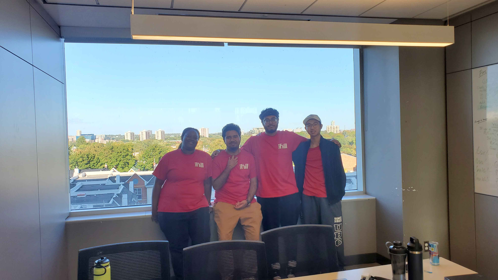

LocutusAI - AI Speech and Presentation Coach

LocutusAI is an advanced AI-driven personal presentation and speech practice tool designed to help individuals improve their public speaking skills through sophisticated audio analysis and insightful feedback. Whether you're preparing for a presentation, speech, or interview, LocutusAI provides personalized recommendations to enhance your delivery, confidence, and overall presentation quality.
The system works by allowing users to either record their presentation in real-time or upload an existing audio file. Once the audio is processed, LocutusAI leverages cutting-edge natural language processing (NLP) and machine learning techniques to perform an in-depth analysis of your speech. It evaluates multiple aspects of your presentation, offering detailed insights that focus on key elements of effective communication.
Features and Functionalities
Filler Word Detection: LocutusAI meticulously scans your speech for filler words, such as "um," "uh," "like," and "you know." These words often disrupt the flow of a presentation and can undermine credibility. By identifying the frequency and context in which these filler words are used, LocutusAI helps you become more aware of these habits and reduce their impact.
Pause and Silence Analysis: Effective pausing is a hallmark of impactful communication. LocutusAI analyzes your pauses, determining whether they are appropriately timed or indicative of hesitation. This feature helps you find the optimal balance between speed and clarity, ensuring that your audience remains engaged.
Tone and Intonation Assessment: LocutusAI provides a comprehensive analysis of your tone of voice and intonation patterns. It evaluates the variability in your speech, detecting monotony and suggesting areas where more vocal emphasis could improve the listener's experience.
Speech Fluency and Flow Evaluation: LocutusAI identifies patterns of stuttering, hesitancy, and unnatural breaks in your speech. By using sophisticated algorithms to evaluate speech fluency, it offers suggestions on how to improve the flow of your presentation.
Custom Metrics and Analytics: LocutusAI provides a detailed dashboard of metrics and analytics related to your speech performance, including average speaking pace, percentage of time spent pausing, and variability in tone. This helps you track your progress and measure improvements over time.

We worked on LocutusAI during a hackathon, which allowed us to collaborate, innovate, and build an effective solution for improving presentation skills.
Technologies Used
- JavaScript
- Node.js
- Express.js
- Deepgram API
- React